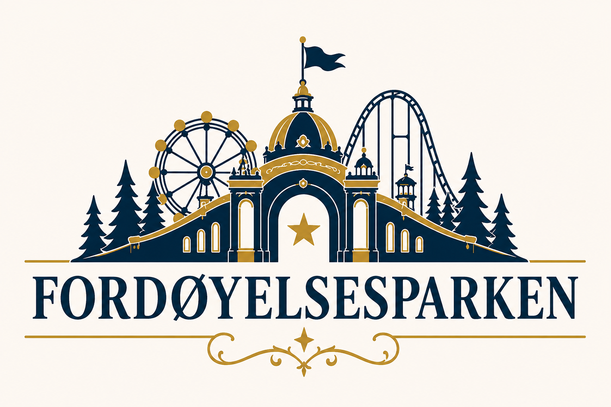
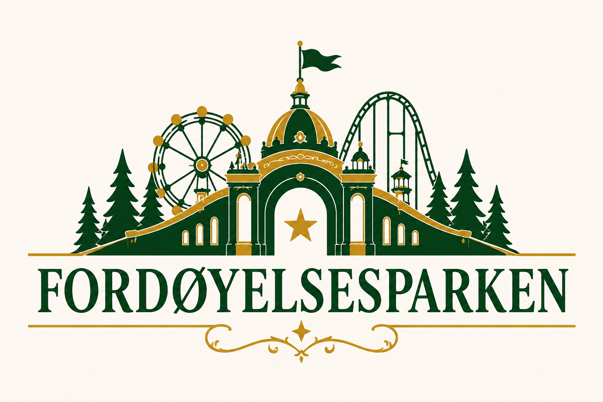
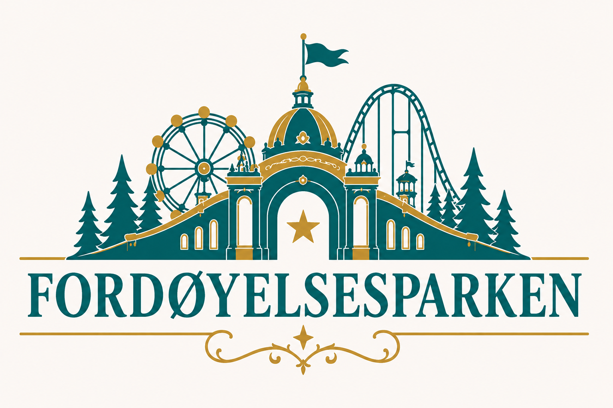
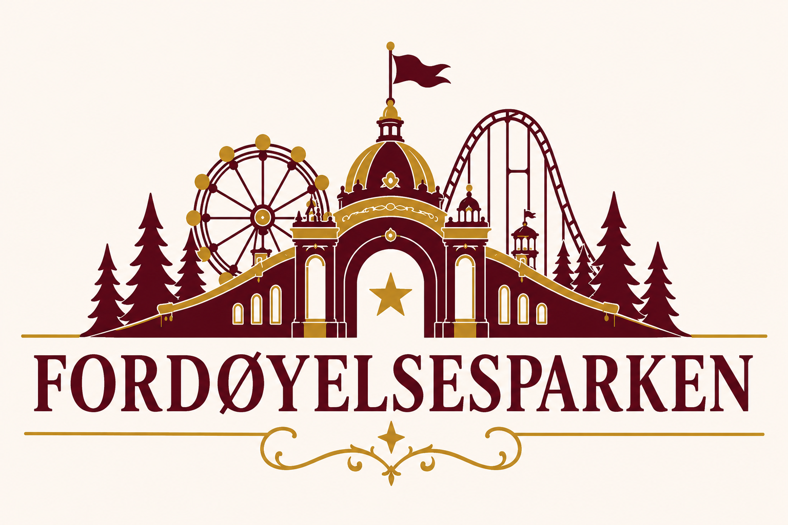
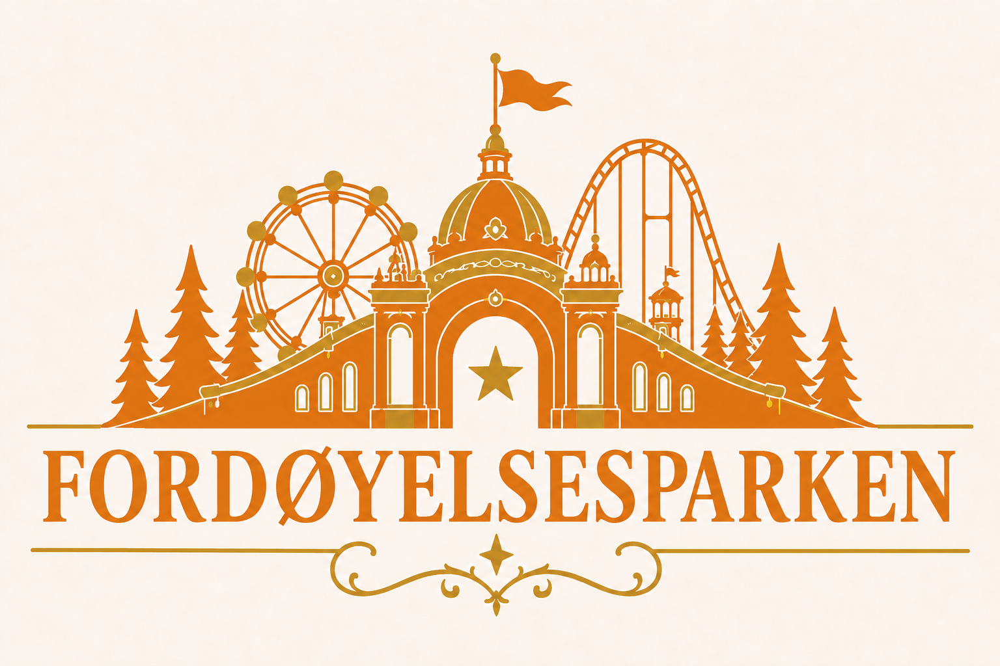
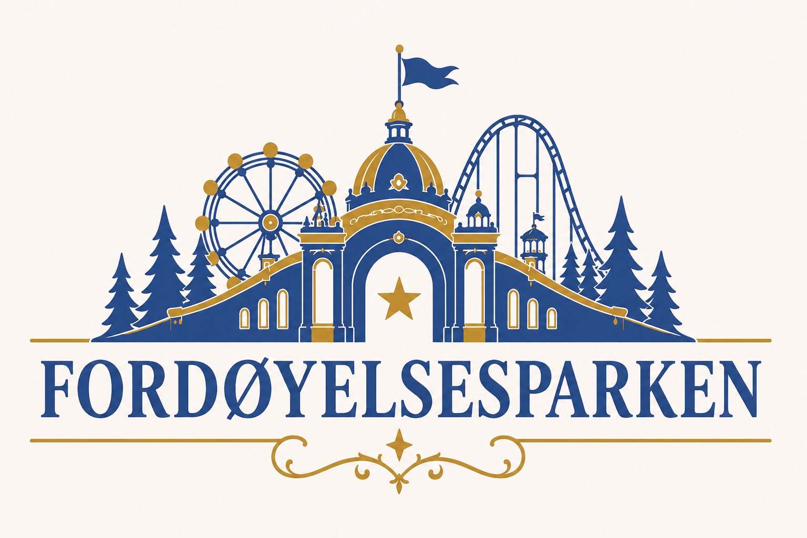

Del II · Logo
GODKJENTE FARGEVARIANTER
Den offisielle Fordøyelsesparken-logoen finnes i sju godkjente fargevarianter. Formen er alltid den samme; fargen viser hvilken publikasjon logoen tilhører.

Bokbibelen · Marineblå

Karakterbibelen · Skoggrønn
Designbibelen · Lilla

Parkatlas · Turkis

Universbibelen · Burgunder

Faktabibelen · Oransje

Digitalbibelen · Koboltblå
Bruksregel
Velg logoen som samsvarer med publikasjonens kjernefarge. Ikke bruk en annen variant bare fordi den passer bedre til en bakgrunn eller et enkeltstående design.
De konkrete fargekodene og reglene for fargebruk dokumenteres i kapittelet om fargesystemet.